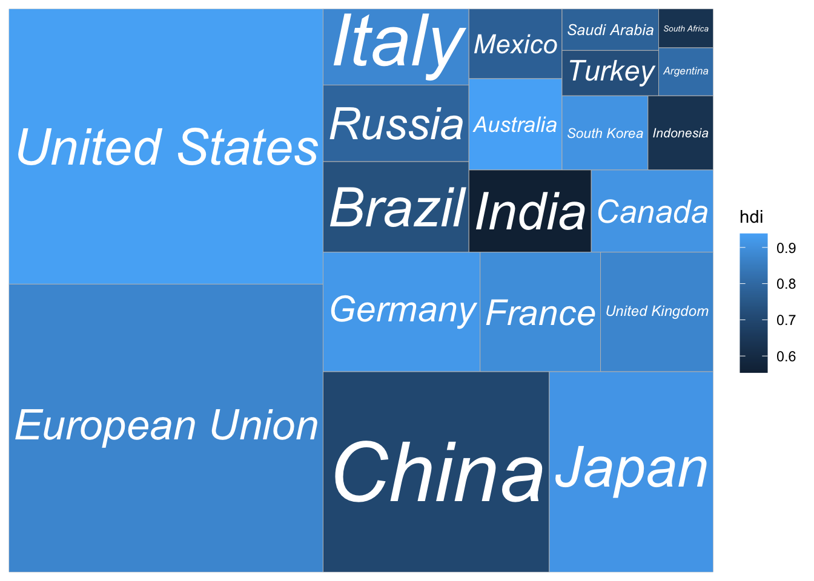

8 Treemaps
# Load packages
library(treemapify)8.2 A simple treemap with text
p <- ggplot(G20, aes(area = gdp_mil_usd, fill = hdi, label = country)) +
geom_treemap() +
geom_treemap_text(
fontface = "italic",
colour = "white",
place = "centre",
grow = TRUE
)
p